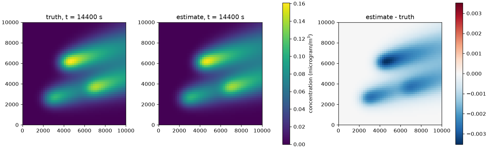
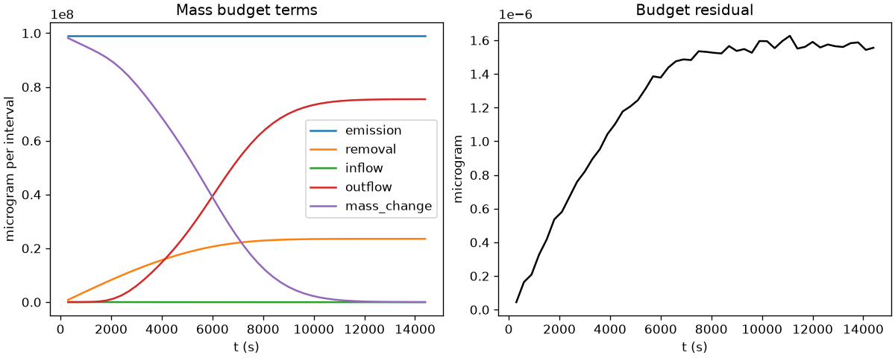
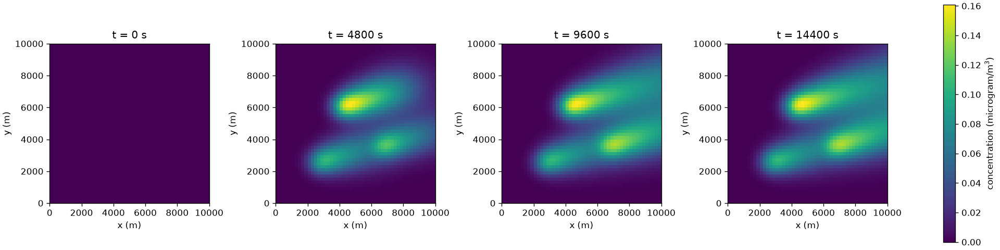
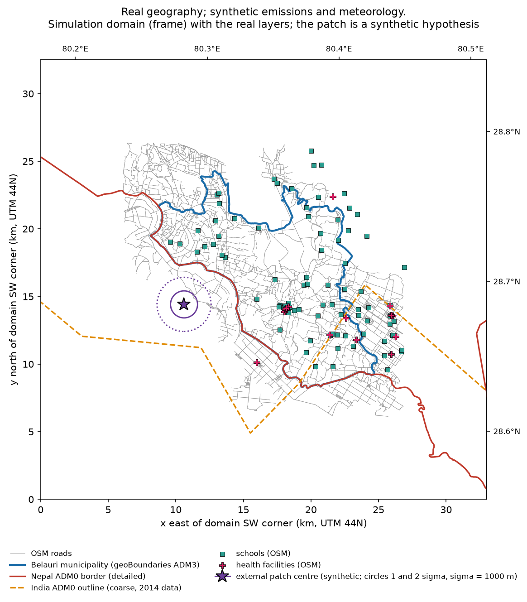
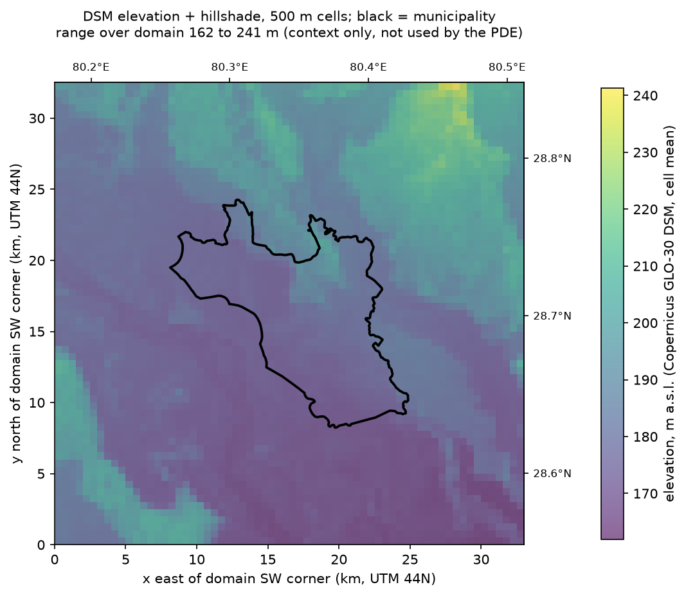
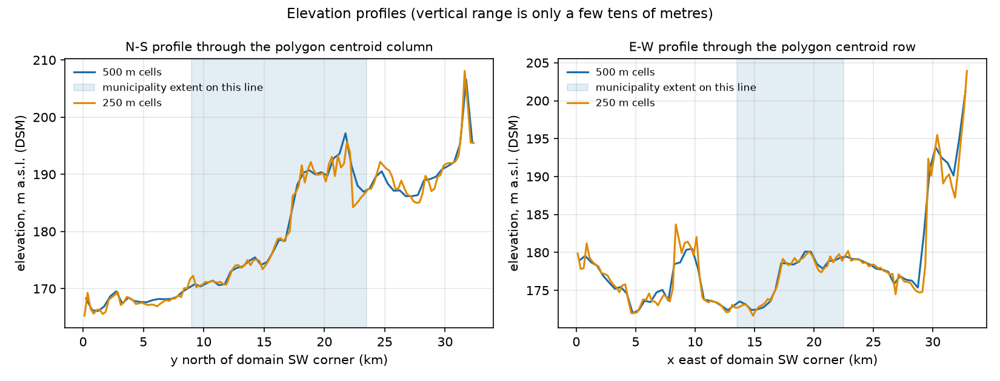
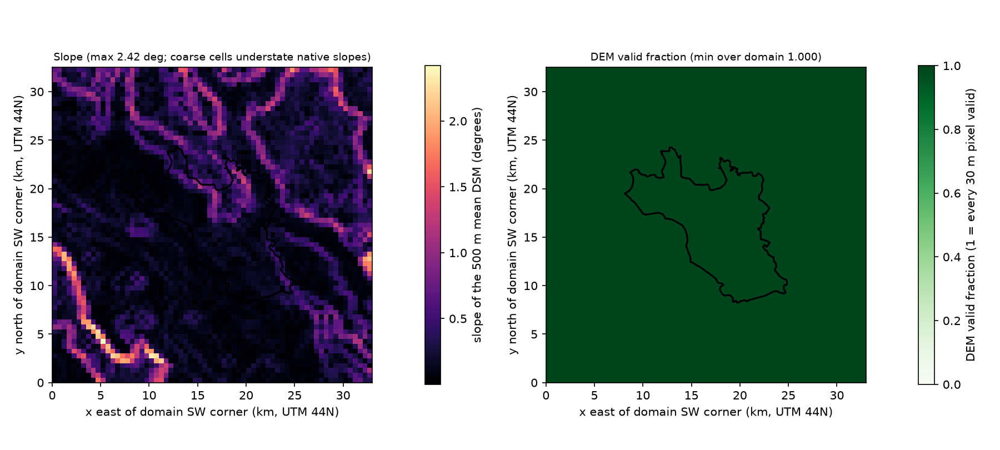

Limitations: Inverse crime (same solver/grid), single noise draw and layout, everything but q known

A-0009 · truth_vs_fit.png
F-006 · FINAL: greedy layouts beat spread/random on fresh test scenarios with alpha frozen on validation (matched, synthetic)
alpha=0.1 selected on validation seed 44. Test seed 33: mean RMSE greedy 0.021/0.017/0.0015/0.00045/0.00041 vs spread 0.022/0.020/0.014/0.014/0.0013 for b=1/2/3/5/8; paired greedy-spread win rate 78/61/78/100/78% (n=18); advantage clear from 3 sensors, not established at 1-2; greedy test RMSE 1.1-2.5x its design RMSE.
supported, medium confidence · by claude-code · reviewed by scientific-reviewer: supported
Evidence: EXP-005 EXP alpha selection on validation ensemble; EXP-006 EXP deployment comparison FINAL (alpha frozen on validation; fresh test seeds); RUN-0008 alpha-selection; RUN-0009 benchmark-final
Limitations: 6+6 scenarios, 3 noise draws, sd not CI, matched model, greedy not optimal; supersedes F-003 whose alpha was chosen after seeing test results
21 files (fields, fitted amplitudes, layouts, benchmark/alpha-selection/mismatch metrics) identical before and after routing all workflows through one ForwardSolver; the comparison detects a real alternate FiPy configuration; 22 routing tests prove injected solvers reach truth, inference, response-basis, direct-fit, case-building and CLI paths.
supported, high confidence · by claude-code · reviewed by scientific-reviewer: supported
Limitations: No independent alternative solver exists yet; routing tests use FiPy-derived stand-ins
F-016 · Forward scheme: mass-consistent, first order in time, observed spatial order ~1.4 in the periodic test (~2.2-2.7 in the steady strip), large numerical diffusion
Open-boundary budget residual <=1.9e-14 relative; no negative values; periodic Gaussian test relative L2 error 0.155/0.0607/0.0238 at nx 20/40/80 (ratios 2.56/2.55, observed order ~1.4, time-error floor present); steady open-boundary 1-D strip against the analytic solution has errors 6.5e-3, 1.4e-3, 2.6e-4, 3.9e-5 at nx 25/50/100/200 (orders 2.2-2.7); effective diffusivity at 50x50, dt=60 s about 1.6 K (exponential scheme), matching theory within 3%.
preliminary, high confidence · by claude-code · not yet independently reviewed
Limitations: Uniform-wind periodic and 1-D strip cases only; synthetic verification, not validation. Supersedes F-001 whose '~second order in space' wording was not supported by the periodic test
F-017 · Matched-design layouts are not robust at 2-3 sensors under model mismatch, but per-case counts are mixed (v0 mismatch, synthetic)
results/mismatch-final, greedy vs spread mean total RMSE: wind-perturbed b=2 0.0748 vs 0.0247 (spread lower in 5/6 cases), b=3 0.0263 vs 0.0218 (3/6); extra source b=2 0.0895 vs 0.0324 (5/6), b=3 0.0459 vs 0.0312 (spread lower in only 1/6 cases: a few large cases drive the mean); matched b=3 greedy 0.0015 vs spread 0.0144 (spread lower in 1/6). At b>=5 greedy is better or equal.
preliminary, medium confidence · by claude-code · not yet independently reviewed
Evidence: EXP-007 EXP mismatch FINAL (fixed benchmark-final layouts, frozen alpha, fresh test seeds); RUN-0011 mismatch-final
Limitations: 6 test scenarios x 3 noise draws; one magnitude per mismatch kind; means are outlier-sensitive; supersedes F-008
F-018 · Belauri forward: the external patch reaches the municipality whenever the wind carries it from the WSW side (initially or throughout), not under steady north/east winds; numerical diffusion dominates the nominal K (real geography, synthetic emissions/meteorology)
Centroid arrival after onset 2627 s (WSW and reversal), 3108 s (channelled demo); external concentration fraction 0.22 (WSW), 0.051 (reversal), 0.194 (channelled demo), <3e-4 (north, east); smaller outer domain changes the study mean by -10.5% only under the reversal; K_eff/K 2.5-4.9 on the 250/500 m meshes at 1.5 m/s (higher at higher speeds); replacing DEM/hillshade/slope by constants changes no concentration.
preliminary, high confidence · by claude-code · not yet independently reviewed
Limitations: Synthetic emissions and winds; K_eff/K range is for 1.5 m/s; terrain dynamics unresolved; supersedes F-011 whose 'only under WSW' wording was wrong
F-019 · Boundary-condition input (whole-side bases) removes part of the error from an omitted localised external plume (synthetic; corrected values)
Truth E1 explicit; fitted models omit E1: study-region RMSE/peak 0.172 (local-only); with a basis onset matching E1 0.118 (uniform) and 0.114 (four-side bases); with the onset mismatched (7200 s vs 3600 s) 0.135 (uniform) and 0.133 (four-side); E1 explicit with the true amplitudes 0.009 (no fit); omitting E1 biases local amplitudes upward (1.27e5/1.03e5 vs 1e5/0.7e5).
preliminary, medium confidence · by claude-code · not yet independently reviewed
Evidence: EXP-011 EXP external vs local identifiability RERUN (after independent review fixes); RUN-0024 transboundary-rerun
Limitations: Whole-side bases only; synthetic matched model; temporal profile assumed known; the 0.009 reference uses true theta; supersedes F-012 (values were listed in swapped order)
F-020 · Geographic sensor design on Belauri: small-budget rankings depend on the noise level and on the design noise used for selection; reference-site use depends on it too (synthetic, matched)
Interior-only, selected alpha=0.01, 6 test scenarios, mean total RMSE (ug/m3) for 1/2/3/5/8 sensors. 5% noise: greedy_total 0.0223/0.0093/0.00525/0.00353/0.00272; greedy_attribution 0.0105/0.0065/0.00542/0.0037/0.00327; spread 0.0148/0.0117/0.0058/0.00512/0.00323; random 0.025/0.0135/0.0103/0.00666/0.00328. 15% noise: greedy_total 0.0366/0.0174/0.0156/0.0108/0.00833; greedy_attribution 0.0625/0.0298/0.0212/0.0086/0.0079; spread 0.0285/0.0214/0.0158/0.0116/0.0082; random 0.0422/0.0227/0.0182/0.0128/0.00826. Layouts are re-selected per noise level (design sigma), so the two noise levels compare different layouts. External reference sites: at 5% noise greedy_total never chose one and greedy_attribution chose 1 (budget 5) and 2 (budget 8); at 15% noise greedy_attribution chose a domestic reference site FIRST (refd_c008004) at every budget, and at one sensor its total RMSE is 0.0988 with_reference vs 0.0625 interior-only. Spread layouts that include reference sites had higher total error than interior-only spread. Differences beyond 5 sensors are within noise.
preliminary, medium confidence · by claude-code · not yet independently reviewed
Evidence: EXP-013 EXP geographic sensor design on Belauri (greedy total vs greedy attribution vs spread vs random); RUN-0026 geodesign-production
Limitations: 6 test scenarios x 3 noise draws; sd is a standard deviation; test sigma was derived from the test ensemble's own signal scale (0.0158 vs 0.0154 for design: a mild independence leak, not corrected); numerically diffusive mesh (K_eff/K 2.4-9.4); supersedes F-014
F-021 · Geographic design robustness: an unknown wind error dominates the sensor-count effect; the identifiability flags cannot show it (saturated by construction); ranking changes are not resolved against noise (synthetic)
Fixed layouts, interior-only, 5% noise, greedy_total total RMSE (ug/m3) at 3/5/8 sensors: matched 0.0053/0.0035/0.0027; unknown wind error 0.044/0.046/0.031; unseen winds 0.041/0.041/0.029 but 0.0047/0.0033/0.0028 when those winds are declared; omitted facility source 0.014-0.016; refined 250 m truth 0.0082/0.0081/0.0066. Flags are identical to the matched rows and weakly_constrained fires on every row (frac_flagged = 1, because the emission scale 1e5 ug/s is small next to the true 0.75-2.25e6 ug/s), so 'flags equal matched' is true by construction and says nothing about the model. The share of method contrasts keeping their matched sign is about 0.45-0.5 under wind errors, but this counts contrasts with an exactly zero matched difference as kept (30 of 240 rows per condition), is for the interior-only 5% subset, and has no noise baseline: most matched contrasts are smaller than their sd, so ~50% is close to chance. Layouts re-selected on the 250 m model share Jaccard 0-0.2 of sites with the 500 m layouts, but that used 3 fine design cases against 6 and has no 500 m resampling baseline.
preliminary, medium confidence · by claude-code · not yet independently reviewed
Limitations: One perturbation per condition; 6 test scenarios (3 fine); numerically diffusive mesh; matched-scheme refined truth; supersedes F-015
F-025 · Belauri field-level convergence (corrected after review): 500 m exponential order ~1.0-1.2, true errors larger than the stated lower bounds, K_eff/K 6.3/3.5/2.3
One synthetic Belauri case, at 500 m support (fields block-averaged to 500 m). Measured against the 125 m solution at dt 25 s the 500 m exponential field has 5.0% and the 250 m field 1.5% relative space-time L2 error; these are LOWER BOUNDS because the reference is one level finer: the error-ratio 1.74 implies observed order p ~ 1.2 (ratio = 2^p+1), the study-mean Richardson estimate gives p ~ 1.0, so asymptotic errors are about 6% (500 m) and 2.6% (250 m). Time-step self-error at 500 m (dt 100 vs 12.5) is 0.64%, much smaller than mesh error; reference floor between exponential and vanleer 125 m solutions is 0.82%. K_eff/K from the exponential-scheme formula (not measured) is 6.3 / 3.5 / 2.3 at dt 25 and 8.3 at the production dt 100 s at 500 m. External-patch fingerprint errors 9.8% (500 m) and 2.9% (250 m) vs 3.7%/1.1% for roads. VanLeer at 500 m is about as accurate as exponential at 250 m but nonlinear.
preliminary, medium confidence · by claude-code · not yet independently reviewed
Evidence: EXP-015 EXP convergence of sensor-design decisions with mesh, time step and scheme (pre-registered); RUN-0028 .venv/bin/python scripts/convergence_stage1.py --profile production
Limitations: One draw, one wind segment; errors after block averaging flatter finer meshes; vanleer orders/Richardson not asymptotic and not interpreted; arrival time uninformative for external transport; in-study source fraction varies with mesh (road 0.949-0.986, builtup 0.977-0.995); independently reviewed (numbers confirmed, order corrected)
F-026 · Toy population-aware design (corrected after review): no objective effect established; greedy path-dependence and design-sample noise are the same size as the objective differences at budgets 2-3
Synthetic domain, one draw per fixture, 16 test cases, alpha 0.1 frozen on validation. At budget 3 one_town: population-greedy layout has population RMSE 0.00080 vs 0.00130 for the area-greedy layout (interval over cases excludes 0) at area RMSE 0.00225 vs 0.00071, but rescoring on the design ensemble shows greedy is measurably suboptimal for its own objective (e.g. population objective: greedy 1.02e-6 vs a mixed layout 6.5e-7; separated_settlements area objective: greedy 1.36e-6 vs an alternative 2.6e-7), so the area baseline is not optimal and differences confound objective with search path. dense_core budget 3 (population layout worse, resolved) is a 1.3% near-tie on the design set that reverses on test, an artefact not evidence of harm. separated_settlements budget 3 lowers both population and area RMSE (not resolved by the 75% rule). Differences above budget 3 are tiny (only one_town mixed_0.25 at budget 8 resolved, -3.6e-5). Equal layouts for mixed_rural_urban are expected because the population sits 0.5-0.7 km from sources the area objective already samples; what matters is the placement of population relative to sources. Layouts matter far more than the objective: random layouts are 8.6-45x and spread 4.5-47x worse than the best greedy layout.
preliminary, low confidence · by claude-code · not yet independently reviewed
Evidence: EXP-017 EXP toy population-aware design on the synthetic domain (pre-registered, laptop-scale); RUN-0030 .venv/bin/python scripts/population_design.py --profile production
Limitations: Greedy not exhaustive (needs exhaustive/swap search at budgets 2-3), one fixture draw and one source placement, 8 design vs 16 test cases, synthetic domain, attribution not evaluated, smoke config shares the production test seed (coarse grid; disclosed), freeze guard only protects within one output directory; independently reviewed
F-029 · Toy wind-error response (corrected after review): direction error raises nominal-wind error ~3-4x at 30 deg and exceeds the sensor-count effect for >=10 deg; chi2/dof detects it; ensemble helps only when the truth is near a prior member
Synthetic Phase-1 domain, 3 local sources + inflow basis, 32 fresh test cases, shared noise, matched model except wind (inverse crime: truth and estimator share operators, mesh, exactly known sigma). Total field RMSE (ug/m3), A known wind ~0.0104 at all errors. B nominal wind: +5/+10/+15/+30 deg 0.0143/0.0205/0.0266/0.0397; -5/-10/-15/-30 deg 0.0168/0.0242/0.0303/0.0371 (roughly linear to 15 deg, slope halves beyond). C ensemble (15 members = 5 directions x 3 speeds, prior fixed before test): +5/+10/+15/+30: 0.0146/0.0104/0.0125/0.0194; -5/-10/-15/-30: 0.0178/0.0126/0.0187/0.0222, i.e. asymmetric. C-B excludes 0 (negative, -0.010 to -0.020) at |10|,|15|,|30| deg, is +0.001 at 0 and -5 deg, and not resolved at +5. At +-10 deg the true wind is exactly a prior member so C's near-oracle error there holds by construction; off-member truths (+-5, +-15) show the generalising benefit, and at +-5 the 0 deg member (= B) wins so there is no gain: C's gain depends on position relative to the grid, not monotonically on error size. Direction vs speed (paired, bootstrap): +5 deg (vector error 0.087) is worse than +-15% speed (0.15) by 0.0025 and 0.0005; +-15 deg (0.26) is worse than -30% speed (0.30) by 0.006-0.010. Underestimating speed hurts more than overestimating (excess over A: -30% minus +30% = 0.0041 [0.0034, 0.0049]). Sensor count: for |dir error| >= 10 deg, 8 sensors with the nominal wind do worse than 3 sensors with the known wind; B still improves with budget (15 deg: 0.0287 -> 0.0237). chi2/dof for B: 1.01 / 1.61 / 3.46 / 13.1 at 0 / 5 / 10 / 30 deg (negative side), rejecting 5% / 53% / 91% at 0 / 5 / 30 deg, calibrated at zero error (A rejects 5.4%). The identifiability flag fraction for B (0.515 at every condition) is data-independent by construction: flags depend on the nominal operator and layout only and fire on 52% of fits even with no wind error. External-fraction error for B 0.061 -> 0.229 (-30 deg), 0.153 (+30); A 0.045-0.104. 90% interval coverage at held-out sensors: A 0.68-0.72 (due to regularisation shrinkage with an over-tight prior, alpha=10: at alpha 0-1 the review control gave 0.88), B 0.12-0.18 at |15-30| deg, C 0.74 at +-10 deg but 0.40-0.52 at +-15 and 0.46-0.50 at +-5 and 0.26-0.35 at +-30: calibrated only when the truth is an ensemble member.
preliminary, medium confidence · by claude-code · not yet independently reviewed
Evidence: EXP-019 EXP toy wind-error response and three inference strategies (pre-registered); RUN-0031 .venv/bin/python scripts/wind_error.py run --config configs/wind_error.json; RUN-0032 .venv/bin/python scripts/wind_error.py report --config configs/wind_error.json
Limitations: Independently reviewed (numbers corrected for sign mixing; no leakage found). Inverse crime: no model or discretisation error beyond wind, so chi2 power and A's skill are optimistic. Alpha=10 chosen on B's validation (A's best is alpha=1: baseline over-regularised, which shrinks the B-A gap). C weights are a pseudo-posterior (exp(-chi2/2) at the penalised estimate, missing log-det/penalty terms). One base wind direction, one source geometry, fixed source positions. Missing controls: prior grid offset so no test wind is a member, alpha sensitivity for A, model-error control at zero wind error, base-wind-direction sensitivity. Bootstrap intervals are over 32 test cases.
F-030 · Toy population design with exact selection: greedy is far from optimal at 2-4 sensors; population weighting helps test population RMSE only at 2 sensors on concentrated fixtures and then costs 6-35x area RMSE; at 8 sensors it overfits the design cases
Synthetic domain, exact enumeration at budgets 2-4 and swap search (recovers the exact optimum in 192/192 checked columns) at 5 and 8 (best-found), 6 fixture draws x 4 independent source placements per fixture type (effective independent units: 4 placements), design 8 / validation 8 / test 16 cases, alpha 0.1. Greedy design objective exceeds the optimum (gap = greedy/best - 1), pooled over objectives, by median 6.7 / 8.9 / 3.0 / 0.81 / 0.19 at budgets 2 / 3 / 4 / 5 / 8 (means 12.9 / 25.4 / 4.4 / 0.85 / 0.24), strictly worse in 88-99% of settings (the area-objective numbers 11.6 / 45 / 7.3 are 4 independent values); budgets 5 and 8 are lower bounds. Population-objective layouts vs the best-found area layout: test population RMSE at budget 2 is -63% (one_town) and -74% (separated_settlements), lower in 24/24 settings, with area RMSE 7.0x and 5.7x; area RMSE is 14-35x at budgets 3-8 for these types; at budget 8 population layouts have HIGHER test population RMSE (+9% to +12% for three types) although their design population objective is 24% better, i.e. overfitting to the 8 design cases (likely, not proven: no design-split control). Mixed beta=0.5 keeps area RMSE within 0.92-1.12x and gains -13% to -36% population RMSE at budget 2 (concentrated in 2 of 4 placements). Differences of exactly 0 for mixed_rural_urban at budget 3 are real (all objectives pick one identical layout per placement). A cluster bootstrap over the 4 placements widens the budget-2 intervals (one_town: [-1.47, -0.14]e-3; dense_core touches 0).
preliminary, medium confidence · by claude-code · not yet independently reviewed
Evidence: EXP-020 EXP toy population design with exact selection and replicated settings (pre-registered); RUN-0033 .venv/bin/python scripts/population_design_exact.py --profile production
Limitations: Independently reviewed. Effective n is 4 placements (settings share cases); 4-cluster bootstrap undercovers, report per-placement means. Excluding-ties subset is a conditional estimand. Uniform-fixture stop check never executed. Greedy layouts not evaluated on test so the test-error cost of greedy suboptimality is unknown (Phase 2 greedy results unaffected in direction but not in size). Seeds: fixture/placement seeds not covered by check_seeds (low risk). _inv3 conditioning only spot-checked. Budgets 5 and 8 reference is best-found. Synthetic domain, local sources only, Phase-1 discretisation.
F-031 · Toy prescribed winds, converged domain: for T = 12 h an outer half-width of ~UT/2 (40 km here) suffices (<1% exposure); smaller domains cut off the return of the plume; channel and vortex effects depend on placement; returned mass is good to ~10%
Prescribed winds (not terrain-derived), U 2 m/s, lambda 1/6 h, T 43200 s, dx 500 m, 7 scenarios x half-widths 20/40/80/175 km, closure 3e-14. Only the 3 reversal cases can depend on domain size (steady, channel and vortex exposures are identical to 1e-16 at all sizes because the outflow face has no diffusive flux), and 80 km equals 175 km because no mass reaches 80 km, so the 175 km reference adds nothing. For reversals, box exposure at 40 km is within 0.05-0.10% of the reference, at 20 km it is -6.3%, -16.8%, -7.1% (t_r 18000/22500/27000 s); returned mass at 20 km is -9%, -73%, -99% (definition 1) i.e. the 20 km domain loses up to 98% of the reversal's added exposure. Reference reversal exposure is +42.5%, +26.4%, +7.8% above steady (the last truncated by T). The sufficiency of ~40 km is set by the return window (mass must reach X by t_r and return before T; worst case X ~ (x_src + x_east + UT)/2 = 39.5 km), not by the advection-decay length U/lambda = 43.2 km (equal to UT/2 in this config; review controls: T = 64800 s fails the 1% tolerance at 40 km (-2.19%) while halving lambda changes it by -0.20%): the required half-width grows with T. channel_step (3 km offset) gives -43% box exposure because the plume centreline moves to the box's north edge; this is a source-placement effect (a -3 km step would give ~0%), channel_bump -4.9%, upstream vortex -10.0% (first-passage exit delayed 16500 -> 23100 s). Numerics: dx 500 -> 250 m changes steady exposure -0.52% and a reversal truncation conclusion holds at dx 250, but returned mass differs by +8% to +13% between dx, so quote returned mass to ~10%; the dt check is empty (backward Euler exact for time-integrated linear quantities after flush-out).
preliminary, medium confidence · by claude-code · not yet independently reviewed
Evidence: EXP-021 EXP toy prescribed winds, converged reference domain and deflecting channel (pre-registered); RUN-0034 .venv/bin/python scripts/prescribed_winds_converged.py --profile production
Limitations: Independently reviewed (U/lambda explanation refuted, channel cause corrected). Numerical diffusion about 700 m2/s vs K = 100; one source geometry and x-position; y half-width capped at 20 km (harmless here); T and lambda not varied independently in the run (review controls only); not_yet_exited branch untested; per-side flux fractions good to +-0.5% of emitted; hand-placed prescribed winds, no terrain physics
F-032 · Toy: greedy layouts cost test error at 2-4 sensors (area RMSE 3.3x / 6.8x / 2.5x the best-found layout at 2 / 3 / 4 sensors, ~1.1x at 5-8); a large design-objective gap carries over to test; uniform stop check passes
EXP-022 re-scored the EXP-020 frozen settings on the test cases (cached bases reused, config hash and alphas asserted equal; exact layouts re-evaluate to EXP-020's rows with max relative difference 0). Area objective, test area RMSE of the greedy layout over the best-found layout, by budget 2/3/4/5/8: 3.27 / 6.79 / 2.46 / 1.15 / 1.08 (independent of fixture type: the area layout does not depend on the population; only 4 independent source placements). Greedy is worse on the matched test metric in 88% / 95% / 89% / 72% / 67% of settings (1920 settings, 70 with identical layouts). Design gap vs test gap: pooled Spearman 0.81 (0.67 / 0.54 / 0.85 / 0.53 / -0.22 by budget): a design gap above 1 (1039 settings) gives a median +190% test gap and 96% of settings worse; at budget 8 the design gap is not reflected on test. For the population objective on one_town greedy's penalty on test population RMSE is smaller (ratio 1.86 / 1.61 / 1.01 at budgets 2 / 3 / 4) and at 5-8 sensors the best-found population layout is no better than greedy on test (0.90, 0.93), consistent with design-set overfitting (F-030). The pre-registered uniform check ran and passed (60 comparisons: uniform population / mixed / capped layouts equal the area layouts).
preliminary, medium confidence · by claude-code · not yet independently reviewed
Evidence: EXP-022 EXP toy greedy vs exact layouts scored on test, uniform stop check (pre-registered); RUN-0035 greedy-vs-exact-test
Limitations: Toy synthetic domain, local sources, Phase-1 discretisation; 4 independent placements (bootstrap over 4 units is descriptive only; per-placement means show the sign); budgets 5 and 8 reference is best-found not provably optimal; not independently reviewed yet; Phase 2 Belauri small-budget layouts were selected by the same greedy rule so the direction of the concern carries over but the size there is unmeasured (needs Belauri-scale EXP-016, which now also scores greedy on test)
F-034 · Toy wind-error controls (reviewed): wind-error penalty and C's gain survive alpha and off-member priors, but C's gain shrinks with distance to the nearest prior member; chi2 detection power is NOT an inverse-crime artefact (specificity and coverage are); base-wind rotation controls are confounded
Controls on the EXP-019 toy (32 test cases, reduced grids, 10 random layouts), recomputed from raw rows by an independent reviewer. (a) Alpha: strategy A at its own alpha 0.1 has 90% coverage 0.90-0.91 (0.71-0.77 at alpha 10; the Gaussian interval ignores regularisation bias, which vanishes at small alpha under this matched model). At +30 deg B-A is 0.0283 (own alphas) / 0.0247 (alpha 10) / 0.0330 (alpha 1) / 0.0427 (alpha 0.1) and C-B is -0.0183 / -0.0189 / -0.0123; at -30 deg C-B widens as alpha shrinks (-0.0165, -0.0225, -0.0511). Only own-alpha comparisons are fair (B's validation optimum is 10); layouts designed under B's alpha slightly favour B, so the gap is conservative. (b) Off-member prior (members 2.5 deg off every validation/test direction, nominal 0 deg not a member): C-B excludes 0 at every non-zero direction (+-5: -0.0016/-0.0017; +-10: -0.0084/-0.0075; +-15: -0.0120/-0.0143; -30: -0.0034 (12.5 deg outside the prior); +30: -0.0215 (7.5 deg outside)); at zero error C is worse by +0.0029 [0.0026, 0.0033] (chi2/dof 1.09, 22% rejections, coverage 0.62: a 2.5 deg miss is detectable). C's advantage does not need an exact member but shrinks with distance to the nearest member and disappears or reverses about 5 deg from one at small errors (F-029: +-5 deg, 5 deg from a member, C-B +0.0010/+0.0003). (c) Model error (truth K x1.2, estimators at nominal K; weak perturbation: A RMSE 0.0109 vs 0.0110 at zero wind error): like-for-like with equal layout-type weights, B chi2/dof at +30/-30 deg is 9.2/11.8 vs 9.7/13.1 without model error, rejections at +-30 deg 90%/94% vs 90%/96%, at +-10 deg 64%/58% vs 62%/58% (the apparent drop to 63/58 vs 74/72 in the first draft F-033 was a weighting mismatch between control and baseline tables): detection power is unchanged; what degrades is specificity (zero-error rejections 5% -> 15-20%) and coverage (A 0.75 -> 0.51, C 0.81 -> 0.61). So none of F-029's chi2 power at >=10 deg is an inverse-crime artefact at this perturbation size. (d) Base wind rotated 45/90 deg: ordering A < C < B holds at +-10 and +-30 deg, B chi2/dof at +-30 deg 6.1-12.9, but the comparison is confounded: validation chose alpha 100 (edge of the grid) for both rotations so A is over-regularised (chi2/dof 1.18-1.34, coverage 0.31-0.59 even with the true wind), the inflow faces and the external basis change with the wind, seeds differ; B/A ratios (1.8-2.6) are not comparable with F-029's and the 'smaller B-A than F-029' statement is not meaningful.
preliminary, medium confidence · by claude-code · not yet independently reviewed
Evidence: EXP-023 EXP toy wind-error controls from F-029 review (alpha, offset prior grid, model error, base wind) (pre-registered)
Limitations: Independently reviewed. Toy domain; reduced direction grids; 10 random layouts per control; model-error perturbation is weak (one parameter, K x1.2); base-wind controls need rerunning at alpha 10 or each strategy's own alpha; no same-seed F-029 baseline for (b) and (d); missing: larger model error, truth halfway between members away from 0 deg. The default hash quoted in the first draft (0a38565582788d62) is the smoke hash; the production hash is 5f267b662a812d98.
F-035 · EXP-015 stage 2: H1 untested (baseline not commensurable); 500 m provisionally admissible on narrow grounds
EXP-015 stage 2 did NOT test what it was registered to test: the mesh comparison and the resampling baseline are not commensurable, so H1 is untested rather than supported. Every mesh selects layouts from the same seed-101 design draws (zero case-draw variability) while each replicate uses a different draw (full case-draw variability), so a one-sided mesh<=baseline test cannot fail - a deliberately broken 2 km mesh would pass too. Separately the registered two-sided IQR criterion yields no verdict at all, because all six failures are below the baseline floor. 500 m / dt 100 is PROVISIONALLY ADMISSIBLE for EXP-026 on narrow grounds (mesh-induced displacement 2532/2771/607 m at budgets 3/5/8 and noise 0.05 is of the same order or smaller than resampling spread; dt 100 vs 50 is exactly a no-op), but that means no evidence against, not shown adequate.
preliminary, high confidence · by claude-code · reviewed by scientific-reviewer: needs work
Evidence: EXP-015 EXP convergence of sensor-design decisions with mesh, time step and scheme (pre-registered); RUN-0058 bash scripts/hpc_link_datasets.sh python scripts/convergence_stage2.py --config
Limitations: SYNTHETIC: real Belauri geography, synthetic emissions, winds and noise. Nothing empirically validated. (1) The central H1 test is structurally non-falsifiable (convergence_stage2.py:244,:258 vs :274); the paired fix is to select at 500 m AND 250 m on each of the 8 replicate draws. (2) The registered rule tests IQR_low<=x<=IQR_high while the hypothesis says no larger than; the one-sided reading is a POST-HOC repair found after seeing results and must be registered as a dated amendment before reuse. (3) Held-out test shows NO DETECTABLE DIFFERENCE: the apparent 6-35 percent advantage is one of six cases (leave-one-out -4.0 and -8.7 percent at budgets 3 and 5; Wilcoxon p 0.22-0.56 at n=6). (4) The design objective is NOT IDENTIFIABLE at 6 cases: eps_sd/J_ref 1.01-2.52 at noise 0.05, so tie_fraction does not measure flatness; budget 8 / noise 0.05 excluded from stability claims. (5) Mesh regret is NEGATIVE (-6.8 to -11.5 percent of J_ref), falsifying numerical-methodology.md section 5 non-negativity and bounding greedy sub-optimality at >=7-12 percent at the reference mesh, so regret partly measures greedy path-dependence. (6) Budgets 3/5/8 are nested prefixes of one greedy trace, so effective n = 2 independent comparisons, not 6. (7) Noise 0.15 uninformative for mesh: sampling noise ~1.3 x J_ref swamps the mesh difference. (8) dt claim scoped to 100 vs 50; dt 25 never run; the 125 m arm was dropped although its registered stop condition was not met (undeclared deviation). (9) Cluster numbers carry a ~5e-08 relative architecture floor vs laptop Phase 1-3 numbers (D-005), six orders below anything in play. (10) Test seed 303 is now burned and cannot serve as held-out for EXP-026; seed 304 remains unspent. (11) 1 of 142 interior candidates changes study category between meshes. (12) Not verified: physics, solver internals, re-derivation of the CSVs from the layouts JSONs, figures.
Failed directions and contradicted claims
F-005 Unregularised bounded least squares is unstable for layouts blind to the plumes [preliminary] — Mitigated by alpha=1 prior in the primary benchmark; not a defect of the diagnostics
Decisions in force
D-009 (2026-10-13) Study drivers live in pravah.studies.{toy,belauri} with module aliases at the old paths; shared helpers limited to what was identical (pravah.runner). Per-study protocol code (check_ensembles x3, windunc freeze, hash payloads) stays separate because the copies differ scientifically.
D-008 (2026-10-13) Model allocation strategy sonnet_first selected (orchestration.active_strategy). orchestration.enabled remains false; what that blocks is untested.
D-007 (2026-10-12) PRAVAH pre-migration, pre-refactor baseline is frozen at git d395b78 (tag baseline/pre-refactor-2026-10). This is a WORKING ENGINEERING BASELINE, not a scientifically validated model: the solver, inverse, design and HPC pipelines run reproducibly and are regression-locked, but every quantitative atmospheric result remains synthetic and only 4 of 35 findings (F-002, F-006, F-007, F-009) have passed independent review. No empirical validation exists. Future refactors must preserve the invariants listed in this decision. — based on F-035, F-002, F-006, F-007, F-009
D-006 (2026-10-12) EXP-015's acceptance criterion is amended POST HOC (dated 2026-10-12, after results were seen) from the two-sided 'within the replicate-pair IQR' to the one-sided 'no larger than the replicate-pair distribution' that its own hypothesis states; and EXP-015 stage 2 is recorded as NOT having tested H1, because its baseline is not commensurable with its mesh comparison. 500 m / dt 100 is provisionally admissible for EXP-026 on the narrow grounds in F-035 - no evidence against, not shown adequate. — based on F-035
D-005 (2026-10-12) FiPy regression gate is architecture-scoped: the 21 files / 0 differ requirement is binding WITHIN an architecture; the x86_64 cluster gets its own committed baseline and the arm64 baseline stays authoritative for laptop work. Cross-architecture bit-identity is not achievable and is not required. No tolerance was loosened.
D-004 (2026-10-11) Phase 3 baseline and deferrals — based on F-025, F-026, F-029, F-030, F-031
D-003 (2026-10-10) Phase 2 baseline: solver interface (results/solver-regression), external/local study (results/transboundary-rerun), verified Belauri geography (data/belauri/manifest.json, results/geography), Belauri forward (results/belauri-forward), geographic design and robustness (results/geodesign, results/geodesign-robust) — all synthetic emissions/meteorology; v0 baseline D-002 stands — based on F-002, F-006, F-007, F-009, F-016, F-017, F-018, F-019, F-020, F-021
D-002 (2026-10-10) Baseline v0: results/reference-v0 + results/inverse-v0 (configs/reference.json); comparison evidence is results/alpha-selection, results/benchmark-final, results/mismatch-final (alpha=0.1 frozen on validation, fresh test seeds 33/7000). results/benchmark, benchmark-unregularized, mismatch are exploratory and superseded. — based on F-001, F-002, F-005, F-006, F-007
Questions and experiments
Q-001 · Does the FiPy forward model reproduce analytical, conservation and refinement behaviour? [answered]
EXP-001 · EXP numerical verification [completed]
Hypothesis: Scheme reproduces exact discrete symbols, conserves mass, converges with refinement; numerical diffusion matches theory
Success criteria: budget residual<1e-9 rel; observed spatial order>1.5; K_eff matches theory within 3%
run
status
max_rel_budget_residual
max_rel_budget_residual_reference
fourier_rel_L2_nx20
fourier_rel_L2_nx40
fourier_rel_L2_nx80
dt_refine_rmse_change_60v30
dt_refine_rmse_change_30v15
grid_refine_rmse_50v100_rel_to_max
RUN-0001
completed
—
1.86e-14
0.1552
0.0607
0.0238
0.0001758
9.22e-05
0.00399
What happened: Verification script ran (RUN-0001, 1m42s): Fourier spatial error 0.155/0.061/0.024 at nx=20/40/80 (ratio ~2.55), time error halves differences with dt, dt-refinement RMSE change 1.76e-4 -> 9.2e-5 (first order), grid 50 vs 100 differs by 0.40% of max, budget residual <=1.9e-14 relative, quadrature ratios 1+9e-8 at worst
Interpretation: Scheme behaves as designed (first order in time, ~second order in space) but the reference grid/dt carry substantial numerical diffusion (K_eff about 1.6K). Synthetic verification only.
What failed: Nothing failed. Initial claim of +31% numerical diffusion was incomplete (reviewer: total +61% at dt=60 s, 50 grid)
Next: Run inverse recovery experiment
Q-002 · Can sparse noisy sensors reconstruct the regional field, and do random, spread and greedy layouts differ on independent cases? [answered]
Hypothesis: With 4 fit sensors and 0.005 ug/m3 noise, the three amplitudes and the regional field are recovered; direct and cached routes agree
Success criteria: rank 3, direct vs linear rel diff <1e-6, held-out sensor rmse reported
run
status
regional_rmse
min_concentration
n_negative
n_steps
max_abs_budget_residual
max_rel_budget_residual
total_emission
total_removal
total_inflow
total_outflow
runtime_s
max_concentration
linear.source_error.relative_l2
linear.weighted_residual
linear.n_obs
linear.rank
linear.effective_rank
linear.condition
linear.regional_rmse
linear.heldout_sensor_rmse
linear.fit_sensor_rmse
linear.wall_s
direct.source_error.relative_l2
direct.weighted_residual
direct.n_obs
direct.rank
direct.effective_rank
direct.condition
direct.regional_rmse
direct.heldout_sensor_rmse
direct.fit_sensor_rmse
direct.wall_s
direct_vs_linear_max_rel_diff
RUN-0002
completed
—
0
0
240
1.626e-06
1.643e-14
4.752e+09
8.868e+08
-1.149e+06
2.171e+09
2.781
0.1608
—
—
—
—
—
—
—
—
—
—
—
—
—
—
—
—
—
—
—
—
—
RUN-0003
completed
—
—
—
—
—
—
—
—
—
—
—
—
0.02169
8.214
96
3
3
5.62
0.0009686
0.0004334
0.0009214
22.35
0.02169
8.214
96
3
3
5.62
0.0009686
0.0004334
0.0009214
113.2
3.963e-09
What happened: Reference simulate (RUN-0002, 2.8 s solve; max budget residual 1.6e-14, 0 negatives) and inverse (RUN-0003, 2m21s incl. direct route). 5 sensors every 600 s, S5 held out, noise 0.005 ug/m3 (~3% of 0.161 peak). q_hat=[97531,146718,78807] vs true [1e5,1.5e5,8e4]: relative L2 error 2.2%; regional RMSE 9.7e-4 ug/m3; held-out sensor RMSE 4.3e-4; rank 3, effective rank 3, condition 5.6; direct (least_squares) and cached (lsq_linear) agree to 4e-9 relative
Interpretation: In this idealised matched experiment (same solver and grid for truth and inference: inverse crime) the amplitudes are well identified. This says nothing about real data.
What failed: none
Next: Deployment comparison across layouts and cases

A-0005 · mass_budget.png

A-0007 · snapshots.pngA-0009 · truth_vs_fit.png
EXP-003 · EXP deployment comparison (random vs spread vs greedy) [completed]
Hypothesis: Greedy-optimized layouts selected on design scenarios give lower held-out regional RMSE than spread and random layouts on independent test scenarios, on average, not necessarily in every case
Success criteria: paired differences reported honestly with sd and win fraction; design-vs-test gap visible
run
status
rmse
RUN-0004
completed
—
RUN-0005
completed
—
RUN-0006
completed
—
What happened: RUN-0004 smoke (18 s); RUN-0005 benchmark alpha=1 (4m56s, peak mem ~176 MB; 6 design + 6 test scenarios, 3 noise reps, 20 random layouts/budget); RUN-0006 same with alpha=0 (4m46s). Alpha=1 uniform-weight mean test RMSE (ug/m3), budgets 1/2/3/5/8: greedy 0.019/0.0037/0.00089/0.00039/0.00036; spread 0.022/0.015/0.0086/0.0086/0.0018; random(mean of layouts) 0.035/0.024/0.018/0.0076/0.0037. Paired greedy-minus-spread mean diff -0.0035/-0.0116/-0.0077/-0.0082/-0.0014, greedy better in 78/100/83/94/94% of 18 pairs. Alpha=0: unregularised fits blow up for layouts blind to the plumes (random 1-sensor mean RMSE 2e19, spread 4.8); medians sane. Greedy at alpha=0 is stable (0.019/0.0057/0.0012/0.00047/0.00026).
Interpretation: Within this synthetic matched setting, designing for the regional error with design scenarios helps; the main driver is avoiding plume-blind layouts (identifiability), so much of the gap vs spread/random is about covering the plume corridor rather than fine optimisation. Greedy is not globally optimal (tiny-fixture exhaustive gap up to 3.7x was seen in tests) and does not win every case.
What failed: alpha=0 headline means are dominated by a few unidentifiable draws; weak prior alpha=1 was adopted AFTER seeing this, chosen a priori (not tuned) and the alpha=0 run is kept as sensitivity. greedy_weighted is not reliably better than greedy even on the population metric (budget 2 worse).
Hypothesis: Fixed design-stage layouts degrade under mismatch; effect sizes reported per kind; a deliberately poor layout shows unidentifiability
Success criteria: all four conditions executed; paired mismatch-minus-matched differences and poor-layout diagnostics saved
run
status
rmse
RUN-0007
completed
—
What happened: RUN-0007 (7m51s). Fixed design-stage layouts from results/benchmark on the regenerated 6 test scenarios x 3 noise reps. Greedy mean test RMSE (ug/m3) matched vs refined-truth vs wind-perturbed vs extra-source at budget 3: 0.0009 / 0.0015 / 0.018 / 0.011; at budget 8: 0.00036 / 0.0010 / 0.016 / 0.010. Paired mismatch-minus-matched (greedy): refined truth +0.0005 to +0.0007 (worse in 78-100% of pairs); wind +0.012 to +0.017 (worse in 100%); extra source +0.008 to +0.010 (worse in 83-100%), unmodelled-source attribution error 15-50%. Poor corner layout (3 sensors): effective rank 0 in every case, condition inf or >1e8, singular values ~1e-9 or smaller; estimates collapse to the prior (source relative error ~1.0) while regional RMSE 0.03-0.08.
Interpretation: Hidden wind error and an unmodelled source dominate over discretisation mismatch in this setup; refined truth shows the matched benchmark was only mildly optimistic from the inverse-crime effect (~+0.0006 ug/m3 at budgets >=3). More sensors do not fix wind or missing-source error: the floor is set by the model error.
What failed: Not every individual draw worsens under mismatch (frac_worse 0.78-1.0 for refined truth and 0.83 in some budgets), reported as observed.
Next: Final scientific review and freeze
EXP-005 · EXP alpha selection on validation ensemble [completed]
Hypothesis: A Tikhonov strength chosen on a validation ensemble (seed 44) using only alpha-independent layouts (random+spread) gives a stable, test-independent regularisation level
Success criteria: alpha_selected.json written before any run on test seed 33; selection independent of test seeds (unit-tested)
run
status
mean_rmse
selected_alpha
RUN-0008
completed
—
0.1
What happened: RUN-0008 (1m21s): 6 validation scenarios (seed 44, noise 9000) x 3 noise reps x (20 random layouts + spread) x 5 budgets = 1890 rows per alpha. Mean regional RMSE (ug/m3) by alpha: 0 -> 1.7e18 (413 rows >10x no-emission RMSE); 1e-4 -> 0.0709; 1e-3 -> 0.0302; 1e-2 -> 0.0175; 0.1 -> 0.0143 (selected); 1 -> 0.0146; 10 -> 0.0162; 100 -> 0.0191; 1000 -> 0.0247. Frozen to results/alpha-selection/alpha_selected.json before any run on test seed 33.
Interpretation: The earlier alpha=1 (chosen after looking at test results) was close to but not equal to the validation-selected value. Selected alpha=0.1 is used for all final runs.
What failed: none
Next: Final benchmark on fresh test seeds 33/7000
EXP-006 · EXP deployment comparison FINAL (alpha frozen on validation; fresh test seeds) [completed]
Hypothesis: Greedy layouts selected on design scenarios (seed 11) give lower regional RMSE than spread and random layouts on fresh independent test scenarios (seed 33, noise 7000), with alpha=0.1 frozen from the validation ensemble
Success criteria: paired differences reported honestly with sd and win fraction; no use of test results in any choice
run
status
rmse
RUN-0009
completed
—
RUN-0010
completed
—
What happened: RUN-0009 benchmark-final (2m35s) and RUN-0010 alpha=0 sensitivity (2m36s) on FRESH test scenarios (seed 33, noise 7000) with alpha=0.1 read from results/alpha-selection/alpha_selected.json (sha256 cd526c9d...). Uniform-weight mean test RMSE (ug/m3), budgets 1/2/3/5/8: greedy 0.021/0.017/0.0015/0.00045/0.00041; spread 0.022/0.020/0.014/0.014/0.0013; random(mean over 20 layouts) 0.034/0.024/0.020/0.0093/0.0047. Paired greedy-minus-spread mean diff -0.0020/-0.0031/-0.0129/-0.0139/-0.0009 (sd 0.0105/0.0107/0.0134/0.0124/0.0015), greedy better in 78/61/78/100/78% of 18 pairs. Greedy design RMSE 0.012/0.0067/0.0013/0.00042/0.00029, i.e. test is 1.8x/2.5x/1.2x/1.1x/1.4x design. alpha=0 sensitivity: greedy means blow up at b=1,2 (0.44, 0.34) and random reaches 1e21; medians sane (greedy 0.024/0.0015/0.00091/0.00056/0.00033).
Interpretation: In this matched synthetic setting a design-optimised layout helps on average, mostly from 3 sensors up where it avoids plume-blind sites; the small-budget advantage is not established with 6+6 scenarios. This replaces EXP-003 as the deployment evidence; EXP-003's alpha=1 was chosen after seeing its test results.
What failed: At b=1 and 2 the greedy-vs-spread advantage is small relative to the case-to-case sd (61-78% wins); greedy is 2.5x worse on test than on design at b=2 (selection optimism / design-case specificity); greedy_weighted is indistinguishable from greedy
Next: Mismatch on the fixed benchmark-final layouts
EXP-007 · EXP mismatch FINAL (fixed benchmark-final layouts, frozen alpha, fresh test seeds) [completed]
Hypothesis: Fixed design-stage layouts degrade under hidden wind error and an unmodelled source more than under refined-grid truth; poor layout is unidentifiable
Success criteria: all conditions executed on the same cases/noise as matched baseline
run
status
rmse
alpha.value
RUN-0011
completed
—
0.1
What happened: CORRECTION to synthesis S1 (poor-layout statement was wrong; it pooled methods). poor_layout_diagnostics.csv has 54 rows = greedy 18 + spread 18 + poor 18 at budget 3. The poor corner layout has effective rank 0 in ALL 18 of its rows (singular values <~1e-5), mean regional RMSE 0.049 (max 0.060). Greedy at the same budget: effective rank 3 in all 18 rows, mean RMSE 0.0015. Spread: effective rank 2 in 9 rows and 3 in 9, mean RMSE 0.014. All other numbers in S1 stand.
Interpretation: As in EXP-004, estimates for the poor layout collapse to the zero prior mean; its RMSE is close to the no-emission error
What failed: S1 misread pooled rows; no change to any computed result
Q-003 · Does routing every workflow through one ForwardSolver interface leave all FiPy results bit-identical, and do injected solvers reach every call? [answered]
What happened: RUN-0012 captured the pre-refactor FiPy outputs (revision cb8146e); a repeat capture of the same code compared identical (21 files, 0 differences), so the baseline is deterministic. After routing every workflow through one injected ForwardSolver (revision 699b76e), RUN-0013 compared against it: 21 files, 0 differences (fields, q_hat, layouts, raw benchmark/alpha-selection/mismatch metrics). 22 routing tests (recording solvers for truth vs inference roles in benchmark, alpha-selection and mismatch; FiPy sentinel; distinguishable-marker backend; FipyForward(upwind) changes results and cache keys; non-linear/undeclared backends refused; CLI routing) plus 196 earlier tests pass; Pyright 0 errors. Negative control: the upwind configuration is flagged by the comparison.
Interpretation: The interface gate passes: the FiPy reference is preserved and replacement solvers reach every call site.
What failed: none
Next: Phase 2 contracts and external/local physics
Q-004 · Is the Belauri Municipality boundary, DEM and feature set acquired from public sources verifiable, and what does it show about the surrounding terrain and national border? [answered]
EXP-009 · EXP geography acquisition and verification (Belauri) [completed]
Hypothesis: A verifiable municipal polygon (geoBoundaries ADM3), Copernicus GLO-30 DEM and OSM layers can be fetched within bounded requests and checked against an independent locator
Success criteria: boundary_status verified (or explicitly approximate with the requirement marked incomplete); manifest with checksums/licences; no fabricated geography
run
status
boundary_area_km2
RUN-0014
cancelled
—
RUN-0015
cancelled
—
RUN-0016
completed
—
RUN-0018
completed
—
RUN-0019
completed
—
RUN-0020
completed
—
RUN-0021
completed
—
RUN-0022
completed
—
RUN-0023
completed
—
What happened: Final geography state: RUN-0016 fetched all layers (geoBoundaries ADM0 NPL/IND, ADM2, ADM3 commit-pinned 9469f09, Nominatim locator + OSM relation polygon, OSM roads/buildings/landuse/amenities via the maps.mail.ru Overpass mirror, Copernicus GLO-30 DEM window); RUN-0020/RUN-0022 geo prepare: boundary_status=verified (name, shapeID, validity, area 122.96 km2, bbox, UTM 32644, OSM relation 5927493 IoU 0.938 / Hausdorff 238 m / area diff 0.05%, hierarchy names Kanchanpur, no other district overlaps; the raw ADM2 coverage 71.7% is recorded as an informational failed check because that ADM2 outline has 36 vertices); external patch classified external_outside_home (2.9 km WSW of the polygon edge, outside the Nepal ADM0 polygon; the IND outline is too coarse to assert containment). Study polygon touches the Nepal-India border (37% of the perimeter within 50 m, south and west). DEM: domain elevation 162-241 m (relief 79 m), mean slope 0.2 deg, high ground NNE 11 km; wider strip (RUN-0021): terrain exceeds the 178 m local level by 50 m only 28.5 km north of the centroid, by 200 m at 34.5 km, 500 m at 37 km, max 1947 m at 77.5 km — outside the simulated domain. OSM counts: 1025 road km in the polygon, 50,510 buildings in the domain, 60 facilities inside. Raw data checksummed in data/belauri/manifest.json.
Interpretation: Geography milestone met with one caveat: the polygon is geoBoundaries ADM3 (derived from government data) cross-checked against OSM, not an official survey-department file. Terrain: essentially flat in the simulated domain; the northern relief is >20 km beyond the municipality's northern edge, so terrain-driven flow is unresolved.
What failed: Main Overpass endpoint refused/504 during the work (two runs cancelled); mirror fallback added. First prepare was 'approximate' until the independent-evidence district check was added (threshold not loosened)
Next: Belauri forward production and geographic sensor design

A-0040 · fig1_domain_map.png

A-0041 · fig2_dem_hillshade.png

A-0042 · fig3_profiles.png

A-0043 · fig4_slope_valid.png
Q-005 · Can total synthetic concentration observations separate local from external contributions, when is the decomposition unidentifiable, and does an upwind/background site help? [answered]
EXP-010 · EXP external vs local identifiability (synthetic, domains A/B) [completed]
Hypothesis: Whitened nonnegative least squares on total observations recovers local and external contributions when the sensitivity matrix is well conditioned; recovery fails (flagged, not hidden) for no-arrival and confounded cases; an upwind/background site helps decomposition more than an equal-budget interior sensor; boundary-basis input cannot mimic a localised plume
Success criteria: all sub-studies executed; raw rows saved; identifiability flags raised where expected; no test data used for any choice
run
status
rmse_total
cos_L1_E1c_confounded
no_arrival_ext_to_local_ratio
domain_AvsB_rmse_rel_peak_external_sources
domain_AvsB_rmse_rel_peak_mixed
bbasis_rmse_rel_peak_uniform
localonly_rmse_rel_peak
interior8_total_rmse_2pct
interior_up8_total_rmse_2pct
RUN-0017
completed
—
0.991
4.09e-06
0.009
0.033
0.25
0.257
0.000294
0.00264
What happened: CORRECTION to S1 after the independent Opus review: the boundary-basis equivalence sub-study of RUN-0017 contained a coordinate bug (observation layout built in domain-A coordinates while the truth was sampled in domain B, whose study region is shifted by buffer_B-buffer_A), so most sensors read the wrong place and every fit returned L1=0. The statement 'whole-side boundary input cannot mimic a localised plume; 0.257 -> 0.250 of peak' is NOT supported and is withdrawn. On smoke settings with the layout corrected the reviewer found RMSE/peak 0.097 (local-only) vs 0.080 (uniform basis) vs 0.079 (four-side bases), i.e. the opposite direction. Also: the confounded diagnostics quoted in S1 (effective rank 2, rank_deficient) belong to the 30% noise level, not 2%; at 2% the only flag is confounded and the split is recovered; tangential faces were classified by floating-point round-off (v=1.2e-16), affecting the 90/180/270 degree rows of the wind sweep; the scale vector (1e5 µg/s, 0.05 µg/m3) acts as a prior width when alpha>0; the inversion is given the true temporal profiles. All other production numbers in S1 matched the CSVs. A fix worker and a clean-commit rerun (new run, variant experiment) are in progress; until then the recovery, domain-size and special-case tables stand with these caveats and the equivalence study does not.
Interpretation: Superseded by the rerun once fixes land
What failed: RUN-0017's boundary-basis equivalence result is invalid
Next: Rerun production on a clean commit and supersede F-010
EXP-011 · EXP external vs local identifiability RERUN (after independent review fixes) [completed]
Hypothesis: After fixing the equivalence-study layout bug, tangential-face round-off, per-noise diagnostics and disclosure of known profiles/scales, the production external/local study reproduces the recovery results and gives a valid boundary-basis vs localised-plume comparison
Success criteria: all sub-studies executed; equivalence study uses matching study-relative sites; scale sensitivity and onset variants reported
run
status
rmse_total
equiv_localonly_rmse_rel_peak
equiv_uniform_basis_matched_onset
equiv_sector_basis_matched_onset
equiv_uniform_basis_mismatched_onset
equiv_explicit_E1_reference
interior8_total_rmse_2pct
wind_mismatch_total_rmse_rel_peak
emission_scale_x0.1_total_rmse_10pct
RUN-0024
completed
—
0.172
0.118
0.114
0.135
0.00925
0.000294
0.486
0.00737
What happened: RUN-0024 (27.8 min; code revision b270276 whose transboundary-relevant sources are identical to HEAD; provenance flags dirty because other workers edited unrelated files during the run: the recorded list is .research records, one design test, geodesign.py and the run's own outputs). Recovery, prior-sensitivity and domain-size numbers reproduce RUN-0017 (same seeds, alpha=1 selected on validation; 8 interior sensors recover local/external amplitudes to 1.1%/0.6% at 2% noise). CORRECTED boundary-basis equivalence (truth: E1 explicit in domain B; fitted models in domain A omit E1; sensors at the same study-relative sites): RMSE/peak 0.172 local-only, 0.118 uniform basis and 0.114 four-side bases with a basis onset matching E1, 0.135/0.133 with a mismatched onset (7200 s vs 3600 s), against 0.009 for E1 explicit; omitting E1 biases the local amplitudes upward (L1/L2 estimates 1.27e5/1.03e5 vs truth 1e5/0.7e5; 1.03e5/0.94e5 with a uniform basis). Scale sensitivity (interior8): inflow scale x0.1/x10 and emission scale x10 barely change results; emission scale x0.1 raises 10%-noise total RMSE from 0.00147 to 0.00737 and external amplitude error from 0.028 to 0.34, so the scale acts as a prior width. Confounded: 2% noise flags [confounded] only (effective rank 3, amplitude errors 0.05/0.03); 30% noise flags [weakly_constrained, confounded] (effective rank 2, errors 0.32/0.21, F_ext error 0.11). No-arrival at alpha=0: E1 estimate 7.3e10 µg/s, total RMSE/peak 1.47, F_ext 0.39 vs 4e-6 true, flags unidentifiable:E1 and rank_deficient; with alpha=1 the estimate is ~0. Wind mismatch: total RMSE/peak 0.486, F_ext 0.212 vs 0.397, NO flag.
Interpretation: Whole-side boundary bases capture part (22-34%) of the study-region error caused by a localised external plume but leave most of it; the benefit depends on the assumed temporal profile; omitting an external source biases local amplitudes, so a pure local-only fit would misattribute.
What failed: No identifiability flag detects a wrong wind; strong prior can lower error under a wrong model (shrinks to zero) which must not be read as better inference
Next: Geographic sensor design
Q-006 · How does the Belauri flow field respond to wind direction, outer-domain size and mesh/time-step choices when emissions and meteorology are synthetic, and how large is numerical diffusion relative to the nominal K? [answered]
Hypothesis: Local and external contributions on the real Belauri grid respond to wind direction and outer-domain size; mesh/time-step changes alter regional means by <1% while numerical diffusion dominates nominal K; DEM layers do not change any number
Success criteria: tags sum to total; budget residual <1e-9; plotting-only check exact; all comparisons saved
run
status
peak_ug_m3
wsw_external_fraction
reversal_outer_domain_mean_change_pct
mesh500_vs_250_mean_change_pct
mesh500_vs_250_peak_change_pct
Keff_over_K_500m_dt100
Keff_over_K_250m_dt50
arrival_polygon_nearest_after_onset_s
arrival_centroid_after_onset_s
RUN-0025
completed
—
0.2207
-10.5
1.03
-3.26
4.88
2.53
788.8
2627
What happened: RUN-0025 (4m45s, clean commit f29f96b): four prescribed synthetic winds on the real Belauri grid (500 m, 66x65 cells, T=8 h), emissions road 1.5e6 / built-up 1.0e6 / external patch 5e5 µg/s (external onset 2 h; synthetic). Tags sum to the direct combined solve to 3e-15 relative; budget residual <=1.9e-14; no negative values. Combined study-region peaks 0.261-0.395 µg/m3; external fraction 0.22 (WSW), 7e-5 (north), 2e-4 (east), 0.05 (reversal), 0.19 (channelled demo). The external patch reaches the polygon only under WSW (nearest polygon cell 789 s after onset, nearest facility 2020 s, centroid 2627 s; the far cells are not reached in 8 h). Outer domain 2 km buffer vs 8 km: no change for steady winds, -10.5% in the study-region mean under the wind reversal (mass that left cannot return). Mesh: 500 m dt100 vs 250 m dt50: mean +1.0%, peak -3.3%, centroid arrival shifts up to 260 s; dt halving at 500 m changes the mean by 0.04 percentage points. Numerical diffusion estimate K_eff/K = 4.9 (500 m, dt 100), 4.3 (500 m, dt 50), 2.5 (250 m, dt 50) against nominal K=100 m2/s; doubling K changes the regional mean by 0.15%. Plotting-only layers (DEM, hillshade, slope, profile) change no number (replacing them by constants gives exactly 0.0 change).
Interpretation: On this flat region the wind direction, the outer-domain size under reversing wind, the mesh and the numerical diffusion matter far more than the nominal K; DEM layers are context only. All is synthetic: real geography with synthetic emissions and meteorology.
What failed: none
Next: Geographic sensor design on the same region
Q-007 · On the Belauri geography, do greedy layouts selected for regional reconstruction or for local/external attribution outperform random and spread layouts on independent scenarios, and does an external reference site help at equal budget? [answered]
EXP-013 · EXP geographic sensor design on Belauri (greedy total vs greedy attribution vs spread vs random) [completed]
Hypothesis: Greedy layouts selected on design scenarios beat spread and random layouts on independent test scenarios for their own objective; an external reference site at equal budget improves external-term errors but not necessarily total error; spatial-block held-out error exceeds random held-out error
Success criteria: raw rows, paired comparisons, infeasible budgets and exports saved; no test data used for any choice
run
status
rmse_total
alpha_selected_validation
total_rmse_b1_greedy_attribution
total_rmse_b1_greedy_total
total_rmse_b1_spread
total_rmse_b8_greedy_total
total_rmse_b8_spread
production_wall_min
RUN-0026
completed
—
0.01
0.0105
0.0223
0.0148
0.00272
0.00323
11.8
What happened: CORRECTION S3 (found by the documentation pass and verified in results/geodesign/summary.csv): the layout ranking depends on the noise level. At 5% noise (interior-only, selected alpha) greedy_attribution has the lowest total RMSE at 1-2 sensors (0.0105, 0.0065 vs greedy_total 0.0223, 0.0093). At 15% noise the order changes: total RMSE greedy_attribution 0.0625/0.0298/0.0212/0.0086/0.0079 vs greedy_total 0.0366/0.0174/0.0156/0.0108/0.00833 vs spread 0.0285/0.0214/0.0158/0.0116/0.0082 vs random 0.0422/0.0227/0.0182/0.0128/0.00826 for 1/2/3/5/8 sensors, i.e. greedy_attribution is the WORST of the four at 1-3 sensors (paired greedy_attribution minus greedy_total +0.026/+0.012/+0.006, lower in only 2/3/2 of 6 cases) and best at 5-8; its attribution error is also worse at 1-3 sensors at 15% (0.553/0.348/0.269 vs 0.436/0.226/0.189). The S1/F-013 statement that attribution-objective layouts are 'not worse on total error at small budgets' therefore holds at 5% noise only and is withdrawn as a general statement.
Interpretation: Layouts are selected at a design noise level and alpha; their small-budget ranking is sensitive to the noise level on 6 test scenarios, so no small-budget method ordering is established; beyond 5 sensors differences are within noise at both levels
Hypothesis: Fixed design-stage layouts degrade most under hidden/unseen wind errors; omitted sources, profile errors and refined truth matter less; identifiability flags do not detect a wrong model; layouts selected on a 250 m model overlap partially with the 500 m layouts
Success criteria: paired condition-minus-matched rows, ranking changes, flags-vs-error, numerical-diffusion table and 250 m comparison saved
run
status
rmse_total
greedy_total_b5_matched_rmse
greedy_total_b5_hidden_wind_rmse
greedy_total_b5_unseen_wind_rmse
greedy_total_b5_unseen_wind_declared_rmse
greedy_total_b8_refined_truth_rmse
greedy_total_b8_matched_rmse
jaccard_500_vs_250_greedy_total_b3
compute_minutes
RUN-0027
completed
—
0.00353
0.0462
0.0413
0.0033
0.00662
0.00272
0.2
44.8
What happened: RUN-0027 (compute 44.8 min by perf_counter, peak 375 MB; the run wrapper reports 3h17m wall, consistent with the laptop sleeping while idle — inferred, not observed). Fixed design-stage layouts from results/geodesign were re-evaluated on the regenerated test ensemble; matched rows reproduce the main test_raw (pairing check passed in-run). Interior-only, 5% noise, selected alpha, mean total RMSE (µg/m3) for greedy_total at budgets 1/2/3/5/8: matched 0.0223/0.0093/0.00525/0.00353/0.00272; hidden_wind_error (truth +20% speed, +15 deg, not told) 0.0436/0.0385/0.0442/0.0462/0.0312; unseen_wind (speeds 2.6-3.5 m/s, directions off the design sectors, nominal wind declared) 0.0446/0.0418/0.0412/0.0413/0.0294; unseen_wind_declared (same winds told to the estimator) 0.0174/0.0128/0.00467/0.0033/0.0028; omitted_facility 0.0303/0.017/0.0144/0.0156/0.0145; omitted_external 0.0233/0.0108/0.0071/0.00477/0.00409; boundary_time_profile 0.0221/0.00925/0.00547/0.00428/0.00361; refined_truth (250 m) 0.0245/0.011/0.00817/0.00805/0.00662. Same pattern for greedy_attribution and spread. Identifiability flags: identical to the matched rows in every condition (fraction equal 1) while the error grows ~10x under unknown wind errors, so flags do not detect a wrong model. Method rankings: the sign of the contrast between methods agrees with the matched sign in 100% of boundary_time_profile contrasts, 83-90% for omitted sources and refined truth, 45-50% for hidden/unseen wind (coin-flip). Numerical diffusion at the design mesh (500 m, dt 100): K_eff/K 2.4-9.1 over the drawn speeds (0.8-2.5 m/s), higher at the 3.5 m/s of the unseen winds. 250 m re-selection (3 design + 3 test fine cases, budgets 3 and 5): layouts overlap weakly with the 500 m layouts (Jaccard 0-0.2, mean nearest-site distance 1.4-4.6 km); greedy_total 250 m layouts have lower error on the fine test truth in 3/3 cases at budget 3 (0.00475 vs 0.00591), greedy_attribution 250 m layouts do not (1/3, 0.00994 vs 0.00622).
Interpretation: In this synthetic setting the dominant uncertainty for sensor-design conclusions is the meteorology the estimator is told, not the sensor count: an unknown 20%/15 degree wind error costs about an order of magnitude in total error at 3-8 sensors, far more than omitted sources or a profile error, and no diagnostic flags it. The 500 m layouts are properties of this numerically diffusive model and should not be read as sites.
What failed: Layout rankings do not survive hidden/unseen wind errors; site selection is not stable under mesh refinement (3 design cases only)
Next: Final scientific review of the geographic results
Q-008 · Q-A: Can a new region run the same pipeline by changing only config + assets? [open]
Transferability. Accept: second synthetic region runs forward/inverse/design with zero edits to forward/inverse/design/metrics.
Q-009 · Q-B: When does population-weighted sensor placement help, and what does it cost region-wide and in attribution? [investigating]
Compare area, population, mixed (beta) and capped-weight objectives on 5 synthetic population fixtures; same budgets; held-out sensors; frozen objectives before test.
EXP-016 · EXP population-aware sensor placement: area vs population vs mixed vs capped objectives (pre-registered) [proposed]
Hypothesis: H1: on concentrated-population fixtures (one_town, separated_settlements, dense_core_sparse_surround, mixed_rural_urban) greedy layouts selected with population weight reduce test population-weighted RMSE relative to the area-weighted layout at equal budget; H1-null for the uniform fixture (weights equal, layouts must be identical: a sanity check). H2: region-wide (area) RMSE rises and the rise is larger in low-population cells; H3: attribution (local/external) error is not degraded beyond between-case variability; H4: the benefit shrinks or reverses when the test population field differs from the design one (overfitting to an assumed distribution). Negative or null results are valid.
Success criteria: Paired per-case differences (objective minus area baseline) with a percentile bootstrap interval over the 12 test cases (labelled as such, n small; SD reported separately); effect called resolved only if the interval excludes 0 for pop-RMSE and the same direction holds in >=75% of cases; cost reported as the area and lowest-quartile RMSE increase and attribution change; design objectives and beta/c frozen in the registered config before test evaluation (config hash recorded).
No runs yet.
EXP-017 · EXP toy population-aware design on the synthetic domain (pre-registered, laptop-scale) [completed]
Hypothesis: Same H1-H4 as EXP-016 on the Phase-1 synthetic Domain with the 5 population fixtures: population-weighted greedy layouts lower test population RMSE vs area-weighted at equal budget for concentrated fixtures, identical layouts for the uniform fixture, area RMSE and lowest-population-quartile RMSE rise, benefit shrinks under population misspecification.
Success criteria: As EXP-016; configs and objectives frozen (config hash) before test evaluation; uniform-fixture layouts must equal area layouts.
run
status
rmse_pop
rmse_area
rmse_lowpop_quartile
RUN-0030
completed
—
—
—
What happened: RUN-0030 (7 min): 5 fixtures x 7 objectives x budgets 2,3,5,8, 16 test cases, alpha 0.1 frozen; uniform==area and freeze guard passed.
Interpretation: Population weighting changes layouts only at very small budgets on strongly concentrated populations and then trades large area-error increase for modest population-error decrease.
What failed: No benefit at budget>=5; dense_core budget 3 population layout worse; attribution not evaluable
Next: Belauri-scale EXP-016 on HPC after EXP-015 stage 2
EXP-020 · EXP toy population design with exact selection and replicated settings (pre-registered) [needs_review]
Hypothesis: Once greedy path-dependence is removed (exact enumeration at budgets 2-4, swap-local search above) and fixture draws and source placements are replicated (24 settings), the population-weighted layout effect vs area layout is either resolved and moderated by the distance of population from sources (benefit when population lies away from sources the area objective already samples) or absent; F-026 says greedy suboptimality confounded EXP-017.
Success criteria: Bootstrap interval over settings excludes 0 for population RMSE and direction is consistent in >=75% of settings; moderator scatter (distance to source) reported; near-tie and greedy-vs-exact gap tables.
run
status
rmse_pop
rmse_area
RUN-0033
completed
—
—
What happened: RUN-0033 (16m50s): 24 settings per fixture type (6 fixture draws x 4 source placements), exact enumeration at budgets 2-4, swap search at 5 and 8, test 16 cases
Interpretation: pending independent review
What failed: Budgets 5/8 only best-found; greedy not evaluated on test
Next: Review; greedy-on-test comparison
EXP-022 · EXP toy greedy vs exact layouts scored on test, uniform stop check (pre-registered) [completed]
Hypothesis: Greedy layouts selected on the design objective have higher TEST error than exact/best-found layouts at budgets 2-4, by an amount that tracks the design-objective gap; uniform-fixture population, mixed and capped layouts equal the area layouts (stop check).
Success criteria: Paired test differences and the design-gap vs test-gap relation reported; uniform check passes or raises.
run
status
rmse_area
rmse_pop
RUN-0035
completed
—
—
What happened: RUN-0035 linked: greedy vs best-found on test; uniform stop check passed (see synthesis S1)
Interpretation: F-032: greedy costs test error at 2-4 sensors (3.3x/6.8x/2.5x), about 1.1x at 5-8
Next: Belauri-scale EXP-016 on HPC; non-author review of F-032
EXP-026 · EXP-016v population-aware sensor placement at Belauri scale, with the WorldPop fixture and replicated fixture draws (pre-registered variant) [proposed]
Hypothesis: Inherits EXP-016 H1-H4 unchanged and adds: H5 (real-population) the direction and sign of the population-vs-area trade-off measured on the synthetic concentrated fixtures also holds on the WorldPop Belauri field, whose spatial structure was not designed by us; H5-null is a valid and interesting result because WorldPop is a modelled 2025 constrained estimate, not a census observation. H6 (replicate stability) the objective effect at budgets 2-4 exceeds the spread across 6 independent fixture draws; EXP-020 and F-030 found greedy path-dependence and design-sample noise of the same size as the objective differences at small budgets on the toy domain, so without replicates a Belauri-scale effect at budget 2-3 would not be distinguishable from draw noise.
Success criteria: Inherits EXP-016's criteria unchanged: paired per-case differences (objective minus area baseline) with a percentile bootstrap interval over the 12 held-out test cases; an effect is resolved only if the interval excludes 0 for pop-weighted RMSE AND the same direction holds in >=75% of cases; cost reported as the area and lowest-population-quartile RMSE increase plus the attribution change. ADDED for this variant: (a) the uniform-fixture control must reproduce the area layout exactly, or stop and report a bug; (b) at budgets 2-4 an objective effect is reported as resolved only if it is larger than the inter-draw spread across the 6 fixture draws, reported as median and IQR; (c) the WorldPop fixture is reported SEPARATELY from the synthetic fixtures and never pooled with them, because its population total (184030) and spatial structure differ from the synthetic fixtures (25000); (d) cross-fixture generalisation (layouts designed on X evaluated on Y) must be reported for worldpop_real in both directions. beta, cap_c, alpha, budgets, fixtures, seeds and the bootstrap settings are frozen as registered here and must not be reselected after test results are opened.
No runs yet.
Q-010 · Q-C: How do prescribed spatiotemporal winds (idealised ridge/reversal) change plume arrival, boundary flux and local/external attribution? [investigating]
Toy, labelled prescribed not terrain-derived; ERA5 extract only as a disclosed input layer if access is cheap.
EXP-018 · EXP toy prescribed spatiotemporal winds: ridge deflection and delayed reversal (pre-registered) [completed]
Hypothesis: A prescribed upstream flow reversal (idealised ridge, labelled prescribed, NOT terrain-derived) returns an external plume to the study region after a delay that grows with reversal time and outer-domain size; a too-small outer domain truncates the return and underestimates the external contribution; source-contribution estimates depend on the assumed forcing model.
Success criteria: Arrival time, returned-mass fraction and external contribution vs reversal time and outer-domain size with conservation checks; all winds labelled prescribed.
run
status
arrival_s
returned_mass_fraction
RUN-0029
completed
—
—
What happened: RUN-0029 (5 min): 27 cases wind x outer-domain x reversal time; closure <=3.9e-11
Interpretation: Outer-domain size matters for delayed-return scenarios; upstream structure changes exposure only when it reverses or recirculates flow
What failed: Ridge amplitude too weak to matter
Next: Stronger ridge amplitude; finer grid on HPC
EXP-021 · EXP toy prescribed winds, converged reference domain and deflecting channel (pre-registered) [needs_review]
Hypothesis: With a reference domain at least 2 U T wide, a source >=6 km from every boundary, reversal only after the plume has exited the study box, exposure differences between the two largest domains below 1%: smaller outer domains truncate the delayed return of an external plume by an amount that grows with reversal time; a deflecting channel (net offset) changes exposure through geometry whereas a zero-net bump does not; a vortex upstream changes exposure little.
Success criteria: Convergence criterion met or reported failed per scenario; truncation and returned mass vs domain size and t_r with both definitions; closure < 1e-8.
run
status
returned_mass_fraction
ext_exposure
RUN-0034
completed
—
—
What happened: RUN-0034 (18m03s): 7 scenarios x 4 domains (20-175 km half-width), dx 500 m dt 100 s T 43200 s, converged True with no enlargement
Interpretation: pending independent review
What failed: -
Next: Review
Q-011 · Q-D: Do inverse conclusions and sensor selections converge with mesh, dt and scheme? [investigating]
Fixed physical candidate coords; displacement, regret, objective ties vs resampling baseline; compare exponential/upwind vs a less diffusive scheme.
EXP-015 · EXP convergence of sensor-design decisions with mesh, time step and scheme (pre-registered) [needs_review]
Hypothesis: H1: mesh-induced displacement and regret of greedy_total layouts (500 m, dt 100 -> 250 m, dt 50) are no larger than the displacement/regret caused by resampling the design scenarios on a fixed mesh (so layouts moved by sampling, not by numerics). H0: mesh-induced changes exceed the resampling baseline (decisions are numerically unstable at 500 m). H2: a flux-limited scheme (if T-026 verifies it) reduces the 500 m vs reference gap in field error and K_eff/K but not necessarily in decision regret. Either outcome is a valid finding.
Success criteria: Report (no universal threshold): per budget, mesh-induced displacement and regret vs the resampling distribution (median, IQR over 8 replicates); stability claimed only if mesh-induced values lie within the replicate interquartile range AND decrease monotonically along 500->250; practical tolerance tau reported at 500 m and 1 km as fraction of sites matched within tau; objective-tie fraction. Tests ensembles and final figures frozen before opening test results.
run
status
alpha
budgets
design_seed
dt_s
fresh_test_seed
meshes_m
replicates
test_seed
validation_seed
jaccard
mean_displacement_m
regret
rmse_total
k_eff_over_k
RUN-0028
completed
—
—
—
—
—
—
—
—
—
—
—
—
—
—
RUN-0058
completed
0.01
[3, 5, 8]
101
[100, 50, 25]
304
[500, 250, 125]
8
303
202
—
—
—
—
—
What happened: Stage 2 production ran as RUN-0058 (slurm 201819, node004, 12 workers, exit 0, 1h10m32s, MaxRSS 2.6 GB). All 12 pre-registered artifacts retrieved and sha256-verified 12/12; the 721 MB response-basis cache was left on the cluster. Results: dt 100 and dt 50 select identical sites at both resolutions, so only mesh matters. At noise 0.05 the 500 m vs 250 m mean displacement is 2532 / 2771 / 607 m at budgets 3 / 5 / 8 with signed regret -11.5 / -9.2 / -6.8 percent of J_ref. At noise 0.15 all four configs select the identical layout at every budget. The replicate-pair baseline never reproduced a layout (0/28 identical pairs in all six cells), displacement 1000-6813 m.
Interpretation: 500 m / dt 100 is PROVISIONALLY ADMISSIBLE for EXP-026 - meaning no evidence against it, NOT shown adequate. The defensible basis is narrow: at noise 0.05 the mesh-induced displacement is of the same order as or smaller than the resampling spread, and dt 100 vs 50 is exactly a no-op (consistent with stage 1 finding dt error about one eighth of mesh error). The stability test itself, the held-out comparison and the noise 0.15 zeros support nothing. A negative mesh regret of -6.8 to -11.5 percent of J_ref bounds greedy sub-optimality at >=7-12 percent at the reference mesh, so regret partly measures greedy path-dependence rather than mesh error, and that also benignly explains the apparent test advantage. The deeper result is about the design procedure, not the mesh: with 6 design cases the objective is not identifiable (eps_sd/J_ref 1.01-2.52 at noise 0.05), which threatens every small-budget design conclusion in this project, not just this experiment.
What failed: The experiment did not test its own hypothesis. H1 is UNTESTED, not supported: every mesh selects from the same seed-101 design draws (zero case-draw variability) while each replicate uses a different draw (full case-draw variability), so the baseline carries a variance component the mesh comparison does not and a one-sided mesh<=baseline test cannot fail - a deliberately broken 2 km mesh would pass. The registered two-sided IQR criterion also yields no verdict, because all six failures are below the baseline floor rather than above the ceiling. Three of my initial claims were overturned by independent review: the 6-35 percent held-out advantage is a single-case artefact (no detectable difference at n=6); very flat objective was mis-diagnosed (the tie threshold eps_sd exceeds J_ref, so the real problem is non-identifiability at 6 cases); dt has no effect was over-scoped to 100 vs 50. I also missed that mesh regret is negative, falsifying the section 5 non-negativity expectation.
Next: Pre-register an EXP-015 variant with the paired baseline and a dated amendment of the two-sided criterion to the one-sided form the hypothesis states, then run it. Do NOT start EXP-026 on the strength of a provisional admissibility unless the user accepts that risk explicitly.
EXP-027 · EXP-015v2 decision stability with a COMMENSURABLE paired baseline (pre-registered fix) [proposed]
Hypothesis: H1-paired: for each of the 8 replicate design draws r, the 500 m vs 250 m mesh-induced displacement and |regret| measured ON DRAW r are no larger than the replicate-PAIR displacement and |regret| between independent draws. Both distributions then contain the same case-draw structure, so the test can fail. H0-paired: mesh-induced change exceeds the resampling distribution, i.e. 500 m is numerically inadequate for sensor decisions. Either outcome is a valid finding, and unlike stage 2 a deliberately broken mesh must fail this test.
Success criteria: ONE-SIDED, stated before running (D-006). Per budget (3, 5) at noise fraction 0.05: compute mesh-induced 500 m vs 250 m displacement and |regret| ON EACH of the 8 replicate draws, giving 8 paired values; compute the 28 replicate-PAIR values between independent draws. 500 m is admissible only if the paired mesh-induced distribution is no larger than the replicate-pair distribution, judged by (a) median mesh-induced <= median replicate-pair AND (b) a one-sided Wilcoxon signed-rank or a reported percentile of the paired values within the pair distribution. Report the full paired distribution, not a single number. A deliberately coarsened control mesh (2 km) MUST fail this test; if it passes, the test is still non-falsifiable and the result is void.
No runs yet.
Q-012 · Q-E: How does wind error limit source inference (known / wrong-fixed / uncertain-wind estimators)? [investigating]
Direction and speed error grid, paired noise, held-out sensors, chi2/dof misspecification check, coverage if uncertainty reported.
EXP-019 · EXP toy wind-error response and three inference strategies (pre-registered) [completed]
Hypothesis: H1: source/reconstruction error rises monotonically with |wind direction error| and speed error; H2: per unit vector error direction error is more damaging than speed error; H3: Strategy C (discrete wind-ensemble marginalisation, prior range declared a priori, no access to the true wind) beats B (fixed wrong wind) inside the prior range and loses its advantage or becomes overconfident outside it; H4: chi-square per dof flags the wrong wind when noise is known, rank/identifiability flags do not; H5: external attribution degrades more than local under wind error.
Success criteria: Error-response curves with paired-case bootstrap intervals (labelled), A/B/C comparison, coverage and chi2 calibration; claims only where the interval over test cases excludes 0.
run
status
rmse_total
chi2_per_dof
coverage_90
RUN-0031
completed
—
—
—
RUN-0032
completed
—
—
—
What happened: RUN-0031 (3m43s, 17 wind conditions x 3 strategies x 3 budgets x 32 test cases) and RUN-0032 report; freeze guard passed.
Interpretation: In this toy, unknown wind direction error dominates sensor budget, is detectable by chi2/dof but not by identifiability flags, and an ensemble estimator recovers part of the loss inside its prior.
What failed: C slightly worse than B at zero and +-5 deg; nominal coverage not reached even for known wind
Next: Independent review; Belauri-scale repeat on HPC; wind-robust placement (S5a)
EXP-023 · EXP toy wind-error controls from F-029 review (alpha, offset prior grid, model error, base wind) (pre-registered) [needs_review]
Hypothesis: H1: the A-B and C-B conclusions are not artefacts of alpha=10 (A coverage near 0.9 at alpha<=1); H2: with an offset prior grid (no test direction is a member) strategy C retains a smaller but resolved advantage at >=10 deg; H3: with K x1.2 model error at zero wind error chi2/dof exceeds 1 and rejects more, so the chi2 detection power in F-029 is partly an inverse-crime artefact; H4: the direction-error response curve is similar for base winds rotated 45 and 90 deg.
Success criteria: Each control reported against F-029 with paired bootstrap intervals over test cases; claims revised only where intervals exclude 0.
run
status
rmse_total
chi2_per_dof
cov90
RUN-0036
completed
—
—
—
RUN-0037
completed
—
—
—
RUN-0038
completed
—
—
—
RUN-0039
completed
—
—
—
RUN-0040
completed
—
—
—
RUN-0041
completed
—
—
—
RUN-0042
completed
—
—
—
RUN-0043
completed
—
—
—
RUN-0044
completed
—
—
—
RUN-0045
completed
—
—
—
RUN-0046
completed
—
—
—
RUN-0047
completed
—
—
—
What happened: Four report steps (RUN-0044..0047) rerun after S1 and completed exit 0; tables read and independently reviewed; first-draft F-033 superseded by F-034
Interpretation: F-034: wind-error penalty and C's gain survive alpha and off-member priors, but C's gain shrinks with distance to the nearest member; chi2 detection power is not an inverse-crime artefact (specificity and coverage are); base-wind rotation controls are confounded
Next: Belauri-scale wind effect is not tested (S5a blocked); non-author review of F-034
Q-013 · Q-F: Is the sensor-design objective identifiable at all with 6 design cases? EXP-015 stage 2 measured eps_sd/J_ref = 1.01-2.52 at noise 0.05, i.e. the replicate-to-replicate spread of the design objective is comparable to or larger than the objective itself. If the objective cannot be estimated from 6 cases, then which layout greedy selects at small budgets is arbitrary, and every small-budget conclusion in EXP-013, EXP-014, EXP-020, EXP-026 and EXP-015 is affected. How many design cases are needed, and does the answer change the published small-budget rankings? [open]
Q-014 · Phase 3 refactor scope: move study drivers out of the installed package (physical toy/Belauri/observed split) or only into pravah.studies with shims? Also hooks (5.2), orchestration.enabled, archive/remove list, .claude/skills and tools/ retention. See docs/ARCHITECTURE_WORKFLOW_AUDIT.md section 10 (O-1..O-10). [open]
Q-015 · Remaining engineering follow-ups after Phase 3: hook proposals, slow markers, jupyter dependency move, doc archive, hpc-runbook trim, x86_64 gate re-run before next cluster job, F-030..F-035 independent review. [open]
Not scientific. See docs/SCIENTIFIC_REFACTOR_VERIFICATION.md Outstanding.
Experiments without a question
EXP-024 · INFRA HPC round-trip smoke test (not a scientific experiment) [completed]
Hypothesis: Infrastructure test with no scientific hypothesis. A deterministic sum over 1..100000 returns the closed-form values when run on an allocated compute node and the artifact comes home with a matching sha256.
Success criteria: exit 0 and both arithmetic checks ok and SLURM_JOB_ID present and hostname is a compute node rather than the login node and result.json retrieved locally with sha256 matching the cluster-side value
run
status
wall_seconds
RUN-0048
failed
—
RUN-0049
completed
—
RUN-0050
completed
—
What happened: Three runs. RUN-0048 never reached the cluster: the hpc.bundle size guard aborted the build because the working tree carried results/ (2.1 GB) and data/; recorded failed, no Slurm id. RUN-0049 (slurm 201810, node004) ran and exited 0 with both arithmetic checks passing, but collect imported 0 artifacts because the script wrote its output into the bundle source/ tree rather than the run dir. RUN-0050 (slurm 201811, node004) exited 0, both checks passed, and 2 artifacts came home with sha256 matching the cluster-side sidecar (0e143789...). sacct: partition defq, account railabs, AllocCPUS 2 for a 1-CPU request, MaxRSS 1688K against 2G requested, elapsed under one second.
Interpretation: The Research OS to Duke Slurm round trip is verified for submission, compute-node execution, exit status, retrieval and checksum integrity. This validates the mechanism only. It says nothing about whether PRAVAH's scientific stack builds or performs on this cluster: the job was stdlib-only and ran in 5 ms.
What failed: Three configured cluster values were wrong and would have cost allocation or failed the job: gpus 1 on CPU-only code, partition null, and a module load python/3.11 line for a module that does not exist here. Artifacts written outside $RESEARCH_RUN_DIR are invisible to collect (RUN-0049). The hpc doctor reports slurm ok from command -v alone; a non-login shell finds the binaries but cannot reach the controller (DNS SRV failure), so doctor would pass on a cluster where Slurm is unusable.
Next: EXP-025 environment build and production preflight, then an EXP-015 stage-2 benchmark before the production submission.
EXP-025 · INFRA cluster environment build and production preflight (not a scientific experiment) [completed]
Hypothesis: Infrastructure test with no scientific hypothesis. The locked FiPy and geo dependency set builds under Python 3.12 on a defq compute node and pravah imports there.
Success criteria: exit 0 and PREFLIGHT_ENV_OK printed and fipy plus pravah import successfully with versions reported
run
status
RUN-0051
completed
RUN-0052
failed
RUN-0053
failed
RUN-0054
failed
RUN-0055
failed
RUN-0056
failed
RUN-0057
completed
What happened: Seven runs. RUN-0051 built the persistent cluster venv (Python 3.12.12, numpy 2.5.3, scipy 1.18.1, FiPy 4.0.3, matplotlib 3.11.2, full geo stack; pravah and ForwardSolver import). RUN-0052 ran the regression gate against the committed arm64 baseline: 21 files compared, 18 differ. RUN-0053 captured twice on one node: 21 files, 0 differ (deterministic), and reproduced the same 18 differences against the arm64 baseline with values bit-identical to RUN-0052's on a different CPU family. RUN-0054 failed on a missing data/belauri/manifest.json. RUN-0055 passed the gate against the new x86_64 baseline (21 files, 0 differ) and revealed that stage 2 also needs data/belauri/raw. RUN-0056 failed because the command used the system python3. RUN-0057 measured one 250 m/dt 50 reference design case at 308 s.
Interpretation: The Research OS to Duke Slurm path is verified end to end for submission, compute-node execution, exit status, retrieval, checksum integrity, dataset staging and the regression gate. Cluster cores are 2.2x slower than the laptop the published cost table was measured on, so every estimate in docs/hpc-runbook.md section 2 needed that correction. Useful parallelism is bounded by independent units, not cores: 12 for EXP-015 stage 2, 36 for EXP-026, and stage 2's final 31 minutes is single-threaded.
What failed: Three configured cluster values were wrong (gpus 1 on CPU-only code, partition null, a module load line for a module that does not exist here). The hpc doctor reports slurm ok from command -v alone, so it would pass on a cluster whose Slurm controller is unreachable. Artifacts written outside RESEARCH_RUN_DIR are invisible to collect. hpc.bundle.exclude prunes directories before descending, so include cannot rescue a file inside an excluded directory.
Next: Already used: EXP-015 stage 2 production ran on this verified path as RUN-0058.
T-046 [done] BC Shared scientific protocol (seeds, disjoint check, freeze hash) — Re-scoped after line-by-line comparison: check_ensembles x3 and the windunc freeze differ scientifically (draw-key payloads, noise-seed arithmetic, messages, exception types), so only the identical guard tails were shared (in d5a38df). Independent scientific-reviewer verdict: protocol preserved exactly; D1/D2 only partly sound; windunc stays separate. Gate 21/0 run by me.
T-047 [done] BB Separate study drivers into pravah.studies with shims — Six drivers moved with git mv into src/pravah/studies/{toy,belauri}; one-line sys.modules aliases at old paths; cli.py uses new paths. Full suite 589 passed 19:07; gate 21/0; pyright 0. studies.observed deliberately not created (no observations).
T-048 [done] BD Thin script entry points (population_*, prescribed_winds*) — Narrowed by body comparison: of 28 scripts, same-named functions across scripts have SequenceMatcher ratio 0.3-0.6 (same skeleton, different studies) except prescribed_winds pair (0.65-0.76, ~25 lines) and hpc sha256 (must stay standalone). No consolidation: pre-registered population_* studies keep their code; moving bodies into src would be code motion without a demonstrated duplicate. Deferred.
T-049 [done] BE data_provenance field and config boundaries — io.data_provenance(kind, datasets) + provenance(..., data=) added; optional (key omitted when absent, historical files unaffected). Wired into cli simulate/inverse, toy experiments/transboundary (synthetic) and belauri/geodesign/geodesign_robust (geography_only + manifest sha256). tests/test_data_provenance.py. Scripts' own provenance calls not changed.
T-050 [done] BF Legacy cleanup (verified-dead only) — register_research.py removed; phase3.sbatch marked deprecated; winds no longer imports geo; audit corrections (hpc_regression_selfcheck.sh and plot_* are not dead).
T-052 [done] BV Final verification and record — Final: pytest 595 passed (18:43); gate 21/0 x4; pyright 0; imports/cli ok; no cycles; core imports no geo/studies/research. No linter available. See docs/SCIENTIFIC_REFACTOR_VERIFICATION.md
Evidence-based audit of code, docs, Research OS integration and HPC path; produce docs/ARCHITECTURE_WORKFLOW_AUDIT.md and a Phase 3 roadmap. No source changes.
T-039 [done] A1 Recover context, verify Research OS 1.0.0 capabilities — Research OS 1.0.0 verified; strategy sonnet_first set but orchestration.enabled=false; no hooks; MCP not registered; no Scientist Guide file; evidence unbound. Report section 5.
Run the deferred heavy Phase 3 experiments as one Slurm job, import results, interpret with independent review, finish synthesis
T-033 [todo] H1 PI: set up repo on cluster (slurm/setup_env.sh), copy data/belauri/raw, submit slurm/phase3.sbatch, download results bundle
T-034 [todo] H2 Register the cluster runs: research run attach per phase from hpc_manifest.json (command, times, exit code, git commit, hashes), artifacts, no rewriting of history
T-035 [todo] H3 Interpret EXP-015 stage 2 (displacement/regret vs replicate baseline, monotone in refinement, tolerance fractions) and decide the design mesh
T-036 [todo] H4 Interpret Belauri-scale EXP-016 (exact vs greedy on test, population/mixed/capped, cluster bootstrap, design-split optimism)
T-037 [done] H5 Real inputs: WorldPop Belauri extract in data/population (done on laptop) into an EXP-016 variant; ERA5 extract (PI fetches with scripts/fetch_era5.py) through winds.segments_from_series — WorldPop extract (CC BY 4.0, sha256 in data/population/*.json) feeds scripts/population_belauri.py; ERA5 2023 10 m wind (DOI, sha256, licence now recorded in data/era5/*.json) summarised in results/phase3-era5 and run through winds.segments_from_series (07a24b9). Limits disclosed: ERA5 0.25 deg cannot resolve mountain flow; WorldPop is a modelled 2025 constrained estimate. EXP-016 real-population variant runs on HPC.
Transferable framework whose sensor decisions are robust to discretisation and wind uncertainty, with population-aware design; testbed only, no empirical validation
T-023 [done] S1a Transfer audit + second synthetic region fixture and transfer test — Roles configurable in geodesign._load_raw (only src change; core forward/inverse/design/metrics untouched). Real geodesign smoke pipeline runs on an L-shaped synthetic southern-hemisphere region and on Belauri with identical outputs/columns; Belauri smoke outputs unchanged (build_s timing column aside); 78 tests, pyright 0. Remaining assumptions in docs/transfer.md sec c. Not tested: real second municipality, no-neighbour end to end, geodesign_robust.
T-024 [done] S1b Population layer: grid-aligned loader, conservative regrid, 5 synthetic fixtures, area/population metrics, source registry — population.py: counts, conservative regrid, 5 fixtures, area/pop RMSE, mixed weights, dataset_record; toy experiments EXP-017/EXP-020 use it
T-025 [done] S1c Experiment contracts: ensembles/seeds/freeze rules, cheap preflight, cache-key audit, benchmark of one Belauri solve at 500/250/125 m — Cost benchmark at 500/250/125 m (resolution_cost.csv); stage-1 convergence RUN-0028
T-026 [done] S2a Less-diffusive convection scheme (flux-limited) with verification: MMS/periodic, conservation, positivity, order — vanleer convection added, verified (periodic test, closure 3e-13, regression gate 0 differ); nonlinear so unusable with cached responses
T-027 [blocked] S2b EXP convergence of decisions: space, time, joint, scheme; physical-coordinate candidates; displacement, regret, ties vs resampling baseline
T-028 [todo] S3 EXP population-aware design: area vs pop vs mixed beta vs capped on 5 fixtures; Pareto; held-out
T-029 [done] S4a Wind interface audit; time/space-varying and raster wind input; idealised ridge-reversal toy; arrival/flux diagnostics; ERA5 feasibility note — Wind interface audit + winds.py builders + toy EXP-018/EXP-021 (F-031); ERA5 feasibility note only (no download)
T-030 [done] S4b EXP wind-error response: direction/speed grid; strategies A known, B fixed-wrong, C ensemble-marginalised; chi2/dof; coverage — EXP-019 toy wind-error response, strategies A/B/C (F-029, reviewed)
T-031 [blocked] S5a Conditional: wind-robust and population-robust placement
T-032 [todo] S5b Independent scientific review of all findings, Phase 3 synthesis, docs, notebooks, checkpoint
T-011 [done] J: freeze alpha on validation ensemble; rerun benchmark+mismatch on fresh test scenarios — alpha selection redone on validation; final benchmark/mismatch on fresh test scenarios
Open questions
Q-010 Q-C: How do prescribed spatiotemporal winds (idealised ridge/reversal) change plume arrival, boundary flux and local/external attribution? [investigating]
Q-012 Q-E: How does wind error limit source inference (known / wrong-fixed / uncertain-wind estimators)? [investigating]
Q-009 Q-B: When does population-weighted sensor placement help, and what does it cost region-wide and in attribution? [investigating]
Q-011 Q-D: Do inverse conclusions and sensor selections converge with mesh, dt and scheme? [investigating]
Q-015 Remaining engineering follow-ups after Phase 3: hook proposals, slow markers, jupyter dependency move, doc archive, hpc-runbook trim, x86_64 gate re-run before next cluster job, F-030..F-035 independent review. [open]
Q-014 Phase 3 refactor scope: move study drivers out of the installed package (physical toy/Belauri/observed split) or only into pravah.studies with shims? Also hooks (5.2), orchestration.enabled, archive/remove list, .claude/skills and tools/ retention. See docs/ARCHITECTURE_WORKFLOW_AUDIT.md section 10 (O-1..O-10). [open]
Q-013 Q-F: Is the sensor-design objective identifiable at all with 6 design cases? EXP-015 stage 2 measured eps_sd/J_ref = 1.01-2.52 at noise 0.05, i.e. the replicate-to-replicate spread of the design objective is comparable to or larger than the objective itself. If the objective cannot be estimated from 6 cases, then which layout greedy selects at small budgets is arbitrary, and every small-budget conclusion in EXP-013, EXP-014, EXP-020, EXP-026 and EXP-015 is affected. How many design cases are needed, and does the answer change the published small-budget rankings? [open]
Q-008 Q-A: Can a new region run the same pipeline by changing only config + assets? [open]